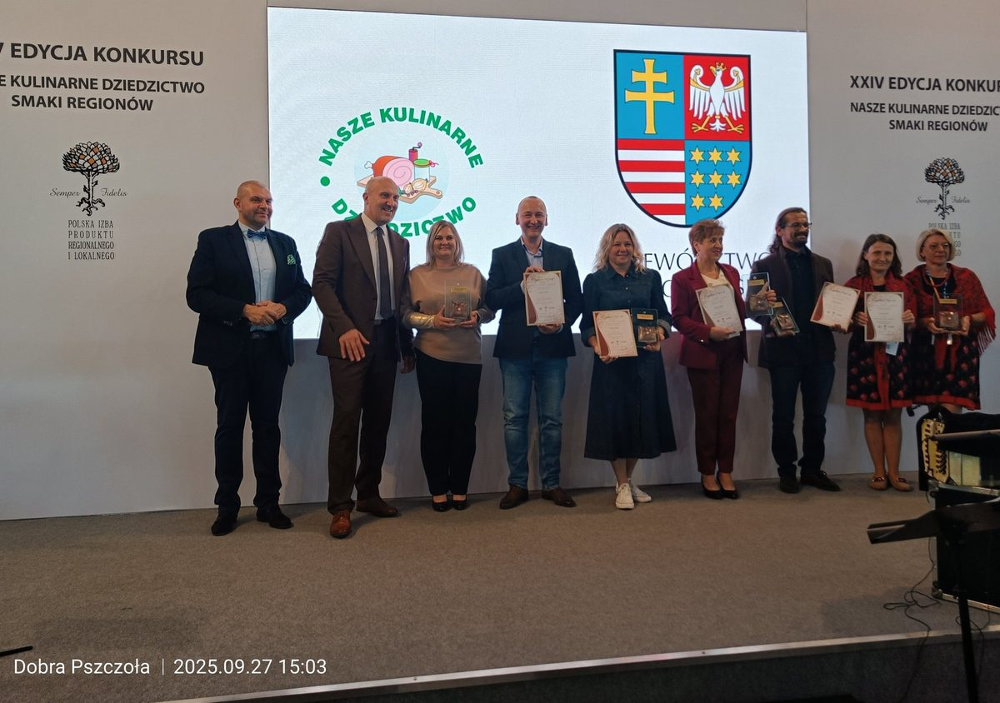
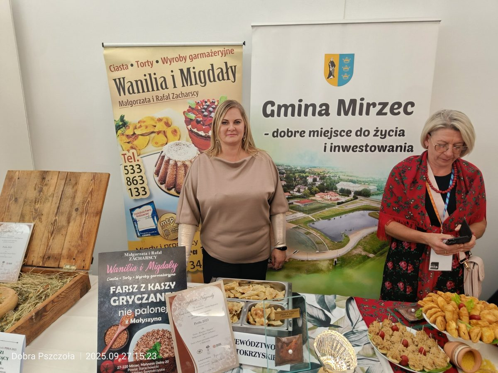
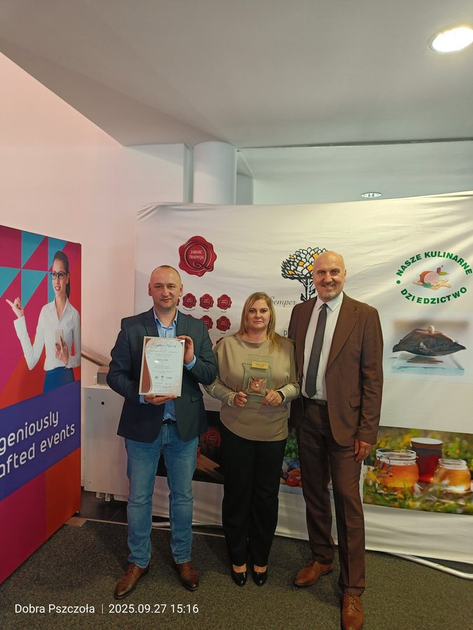
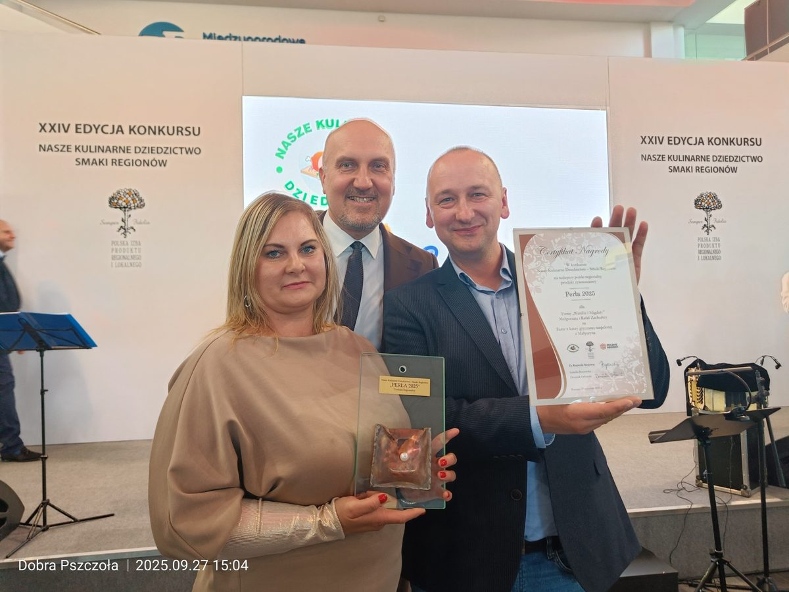
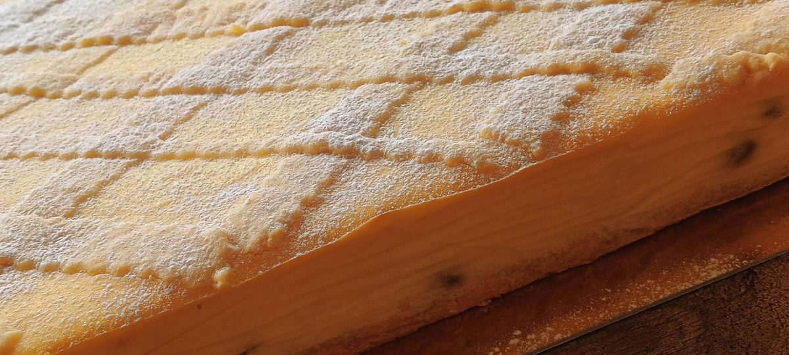
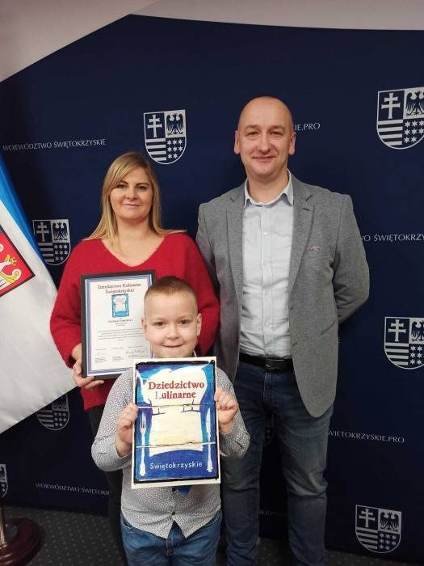

Farsz z kaszy gryczanej niepalonej z Małyszyna Dolnego zdobył Perłę 2025 – najważniejszą ogólnopolską nagrodę dla produktów regionalnych, przyznawaną podczas Targów Smaki Regionów w Poznaniu (POLAGRA). Nagroda ta koronuje całą naszą rodzinną działalność – dwie Perły w jednej rodzinie! (Pasieka Dobra Pszczoła – Perła 2023).
🌾 Farsz z kaszy gryczanej niepalonej • Perła 2025 • POLAGRA Poznań



Na XXIV edycji konkursu „Nasze Kulinarne Dziedzictwo – Smaki Regionów" w Muzeum Wsi Kieleckiej w Tokarni, nasze danie zdobyło najwyższe wyróżnienie w całym konkursie. Jury doceniło wyjątkową regionalność sernika pieczonego tradycyjną metodą z Małyszyna.
W konkursie wzięły udział 34 produkty z całego województwa świętokrzyskiego. Małgorzata Zacharska osobiście przedstawiła sernik jury na scenie w zabytkowym Parku Etnograficznym.

Uroczyste wręczenie Perły 2025 odbyło się na scenie targów POLAGRA food • horeca • foodtech w Poznaniu. Małgorzata i Rafał Zacharscy osobiście odebrali nagrodę, reprezentując powiat starachowicki i województwo świętokrzyskie.
Perła przyznawana jest przez Polską Izbę Produktu Regionalnego i Lokalnego wyrobom, które łączą wyjątkową jakość, autentyczność i tradycję regionalną.
17 grudnia 2021 roku Wanilia i Migdały dołączyła do Sieci Dziedzictwa Kulinarnego Świętokrzyskie – prestiżowego grona producentów żywności tradycyjnej i regionalnej najwyższej jakości.
Certyfikat odebrali Małgorzata i Rafał Zacharscy wraz z synem Mikołajem z rąk Marszałka Województwa Świętokrzyskiego Andrzeja Bętkowskiego.

Europejska Sieć Regionalnego Dziedzictwa Kulinarnego. Certyfikat autentyczności i tradycji wytwarzania produktów regionalnych najwyższej jakości. Przyznany w 2021 roku.
Zezwolenie na prowadzenie Rolniczego Handlu Detalicznego nr WNI: 26113513. Pełna legalność działalności, nadzór sanitarny, bezpieczeństwo żywności potwierdzone dokumentami.
Ciasta, torty i wyroby garmażeryjne prosto z Małyszyna Dolnego.
Perła 2023, dwa złote medale MTP Poznań – nagradzane miody z Puszczy Iłżeckiej
Odwiedź pasiekę →